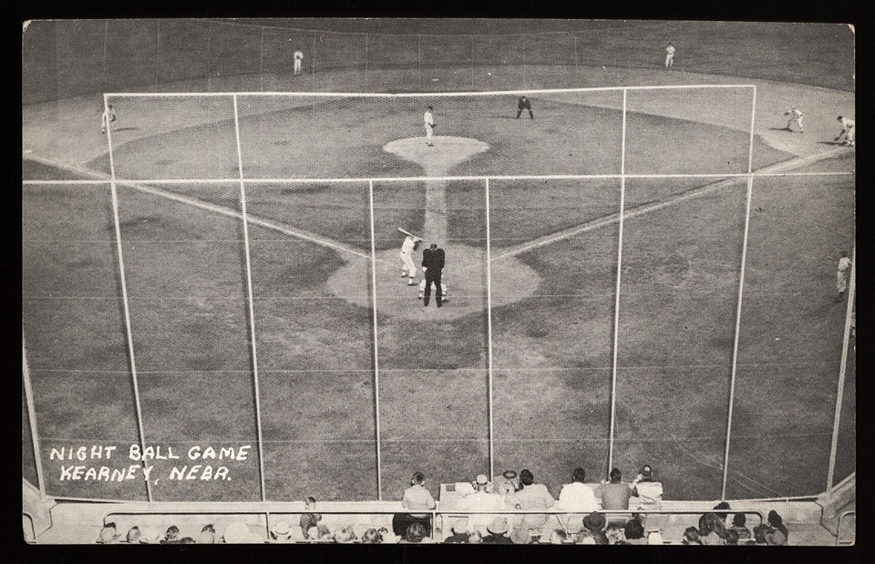

As a sports fan and avid card collector for over 30 years I have amassed a sizeable collection of sports cards and autographs. I have developed this site to share my collection and promote the success of those that have connections to my home state. In addition to this websiteI have a YouTube channel where I share my love of card collecting with others interested in the hobby.
My highest priority collecting project is completing my goal of collecting a card of every player in the Hall of Fame that was issued during their playing days. Negro League players are the most difficult of these to obtain as very few had any US cards issued of them during their careers. The small number of cards made for most of these players are of international origin and are very scarce and expensive. Not counting missing Negro Leauge players I have less than 30 Hall of Fame players missing from my collection all of which had their careers end before 1940 and are quite challenging.
The other primary focus of my collection is celebrating athletes with ties to the state of Nebraska. This part of my collection is more focused on autographs than simply cards and I have a large collection of autographs of athletes that have made the state proud. I would like to increase the diversity of this part of my collection by adding more autographs of female athletes.
